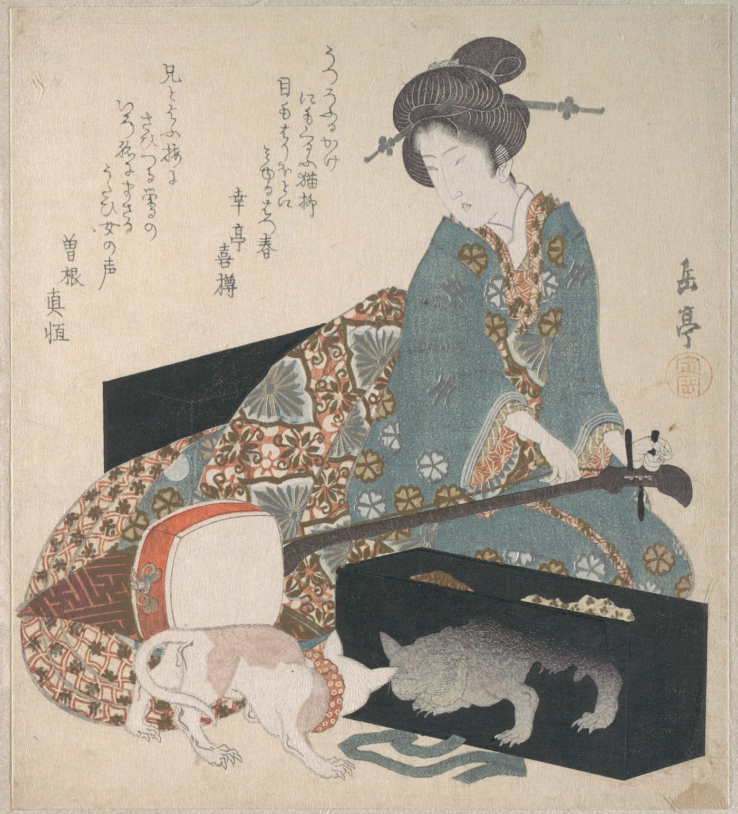
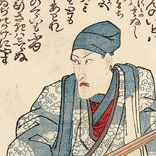
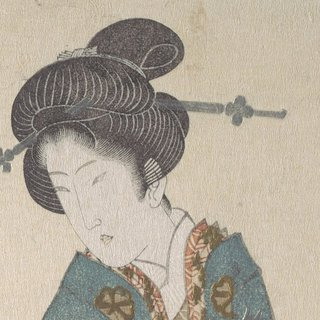
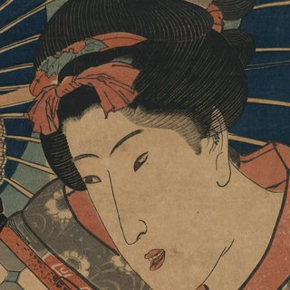
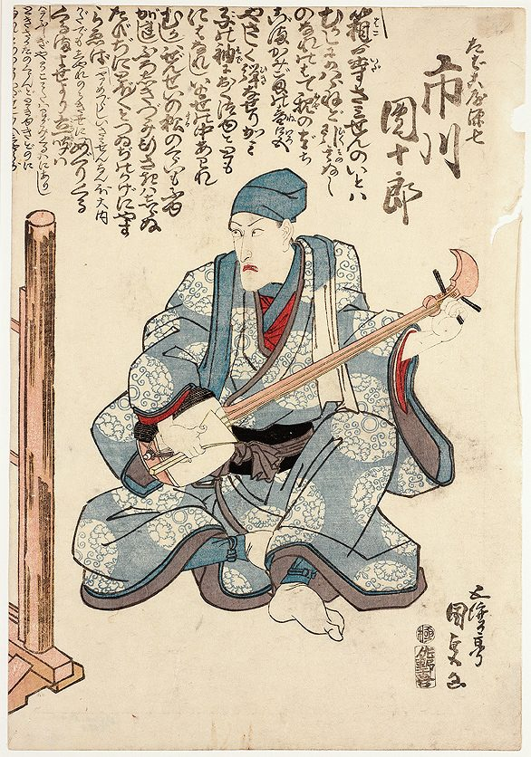
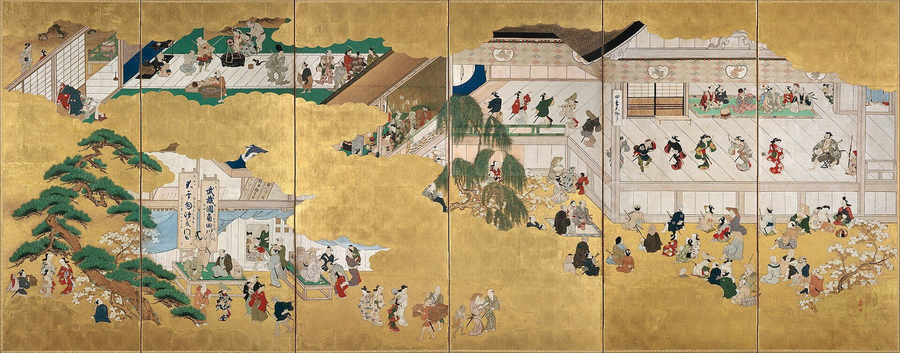

Play the music
of the kabuki stage.
Sit with a professional nagauta artist, hear the shamisen from a few steps away, and play your first phrase. A private hour, for one or two guests.
- Beginners welcome
- English or Japanese
- 60 min
- Private (1–2 guests)
- ¥20,000 per person

Four artists, one music
Each session is led by one of our artists. Read how each of them came to nagauta, in their own words.

Soichiro Yamashina Nagauta shamisen · 30 years The sound of the kabuki stage, up close.
Chizuru Hayase Nagauta song & shamisen · 18 years Song and shamisen, taught from the very first note. Ritsu Fujishiro Nagauta shamisen · 12 years A younger artist who teaches in English.
Haru Onodera Nagauta shamisen · 40 years An unhurried session over tea, in a home studio.Listen. Play. Play together.
Listen up close
The artist plays for you, right in front of you. The snap of the plectrum on skin and string, the long ring of silk: things you never hear from a theatre seat.
Play a phrase of kabuki
A real phrase from the kabuki repertoire, not a simplified tune. You start with how to hold the shamisen and the plectrum.
Play with the artist
You play, and the artist joins in. Finish together with a kakegoe, a traditional call, and keep the video.
The sound behind the curtain
When the curtain opens at a kabuki theatre, a row of musicians is already waiting on stage. Singers, and shamisen players.
This music is nagauta, "long song." It was born in Edo, as Tokyo was then called, about 300 years ago, and it still plays at every kabuki dance today. It paints the scene, carries the dancers, and lifts the story to its climax.
Most visitors see kabuki. Very few ever hear its music up close, and almost none get to play it.


Why we do this
Nagauta is carried by a small number of artists, and fewer people hear it every year. In western Japan, only a handful play nagauta shamisen professionally.
AMANEKU builds experiences together with these artists, so that travellers can meet the music, and the person behind it, directly. We pay the artist for every session. The artist never pays us.
Founded by a nagauta student who has studied the shamisen since childhood.
チントンシャン
Chin, ton, shan: how shamisen players sing the sound before they play it.
Come and hear it for yourself.
First sessions open in November 2026.
How to book